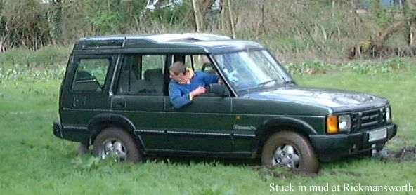
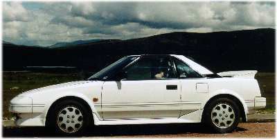
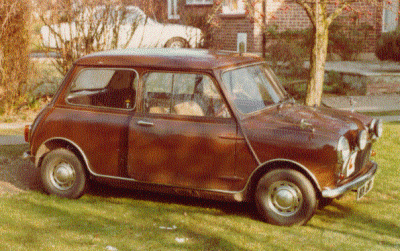
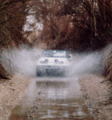
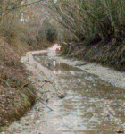
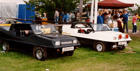
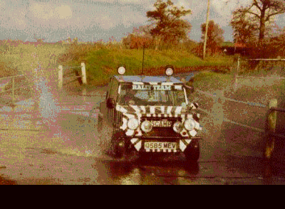
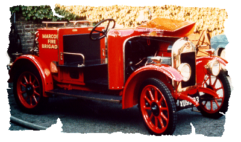
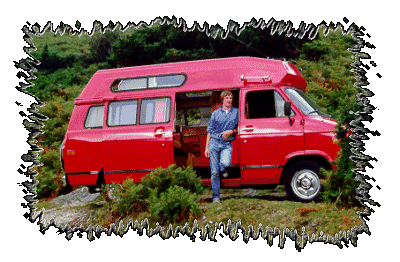
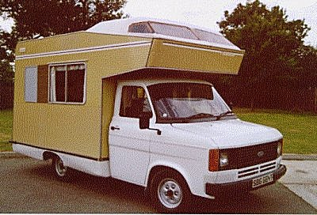

| Although I now drive a Landrover Discovery, this page is dedicated to the various forms of transport that I have owned, driven or destroyed in the last 17 years. This picture shows my first outing in the Disco. Hidden from view is the tow rope and winching vehicle trying to extract me from the sticky mud. It was a bit late to find out that the difflock didn't work. |  |
|  | I have just parted company with my Toyota MR2. This car gave me many years of pleasure and largely trouble free motoring. In the time I owned it I managed to cover some 150,00 miles, but sadly it had to go to accommodate my latest acquisition.. |
| My very first car was a well abused MK1 Mini which only lasted a year or so before being consumed by the dredded tin worm.This was then replaced by another Mini this time a MK2 version which didn't last a lot longer. This Mini did however provide the basis for my next project, my first kit car. |  |
  |
The Nimrod was built using all the running gear from the Mini, including front and rear subframes, engine, wiring and all the electrics. It initially utilised the 1000cc engine from the Mini and went through several stages of tuning before being replaced by a 1300 Cooper S unit. Although this car was not particularly good looking (often described as a bath tub on wheels) it did however have a great power to weight ratio and excellent road holding which allowed it to corner like it was on rails. |
| After 6 years and 90,000 miles of abuse I decided it was time to finish of the inside
trim and give it a general overhaul. My second kit a Scamp was purchased in the meantime
until the Nimrod was ready to be put back on the road. (although this never happened) The Scamp was bought in a road ready state as a full van shape but was soon modified and painted in its distingtive colours. This was also originally powered by a 1000cc engine but had a 1300 MG Metro implant in it's later years. I kept this going until 1995 (with help from bits salvaged off the Nimrod) |
 |
|
 |
This Gwynne Invincible Fire Engine was built in 1922 and saw service with Marconi in Chelmsford and also Larma Engineering in Ingatestone. I had the good fortune while a member of the Marconi Apprentices Association to drive it from London to Brighton. |
| Based on a Chevrolet Van this camper wes great fun with it's 5.7l engine. The main drawback being the 13mpg and the cramped upper bunk. |  |
|  | This was the second of two camper vans I owned. Although more spacious than the first and certainly more practical it lacked the pose value of the Chevey |